Категории
Автоматическая структура по природе и намерению записи.
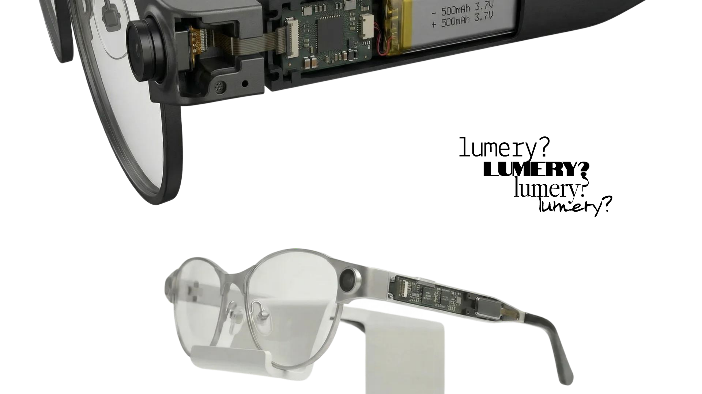
AI-устройство · В разработке
Носимое AI-устройство как единый физический, цифровой и визуальный продукт.
Вопрос продукта
Как AI может жить на лице и при этом оставаться личной вещью, а не гаджетом?
Lumery начинался как умные очки на ранней стадии. Работая напрямую с CEO и ещё одним дизайнером, я помогал выстраивать направление продукта, визуальный язык, опыт приложения-компаньона и логику взаимодействия как одну цельную систему.
Физический продукт
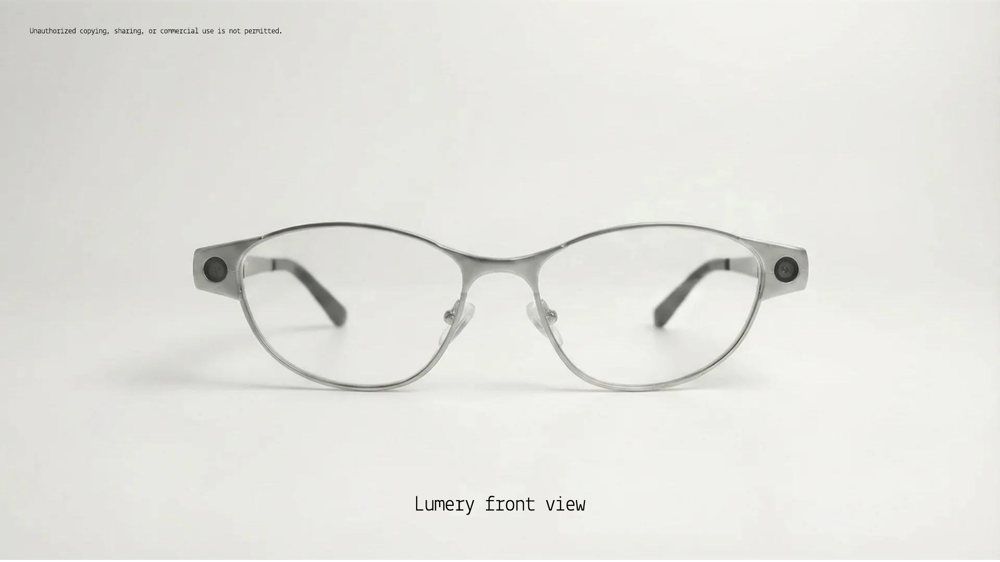
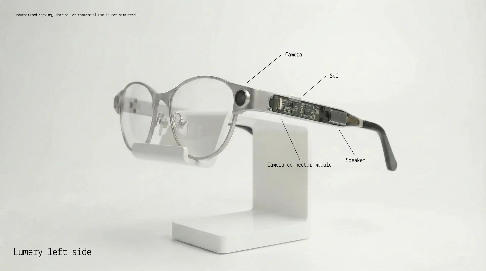
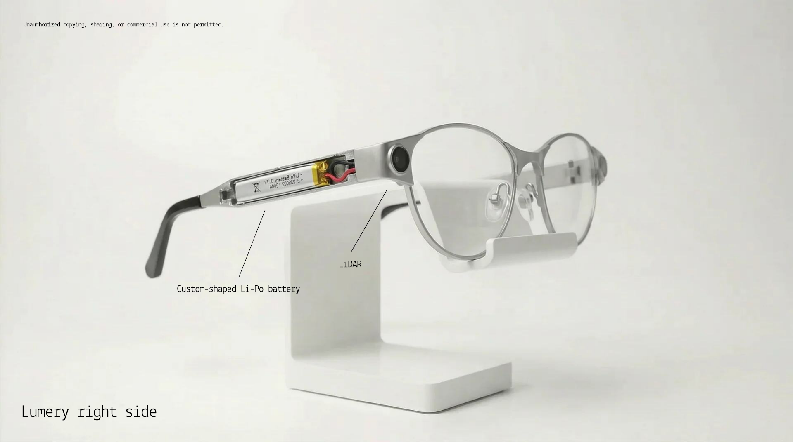
Принципы продукта
Технология присутствует, но объект остаётся тихим, носибельным и понятным.
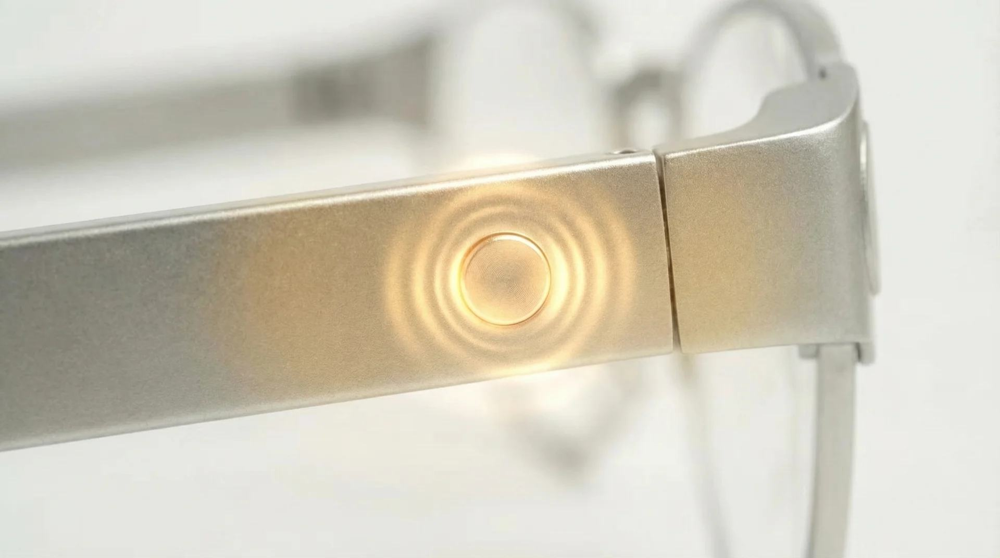
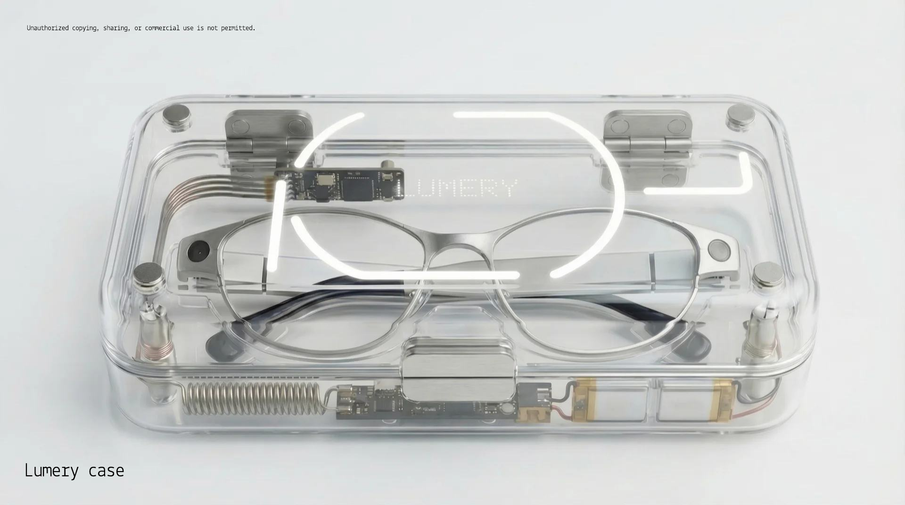
Цифровой продукт
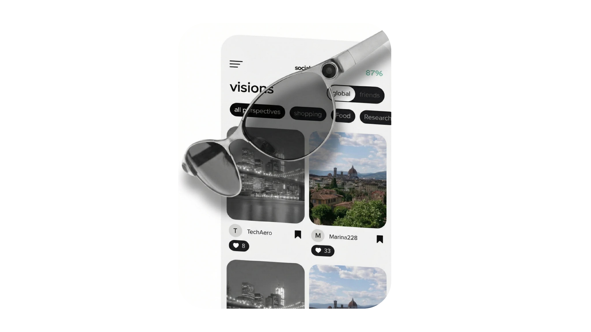
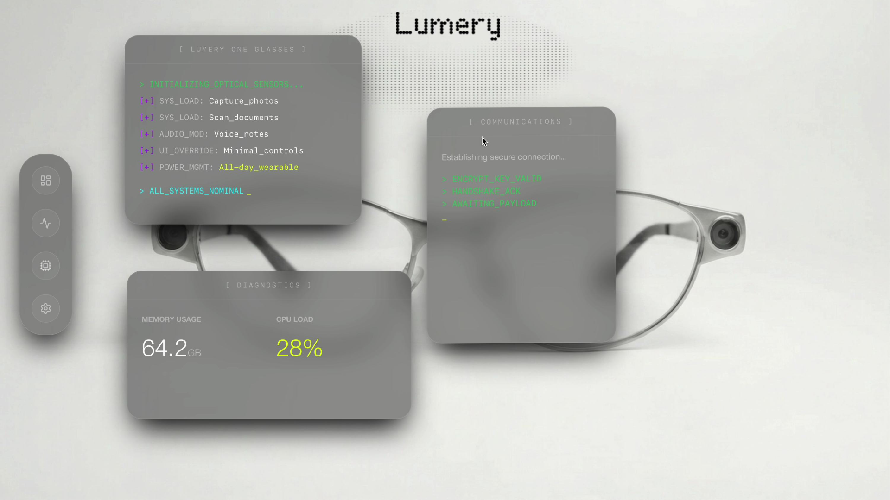
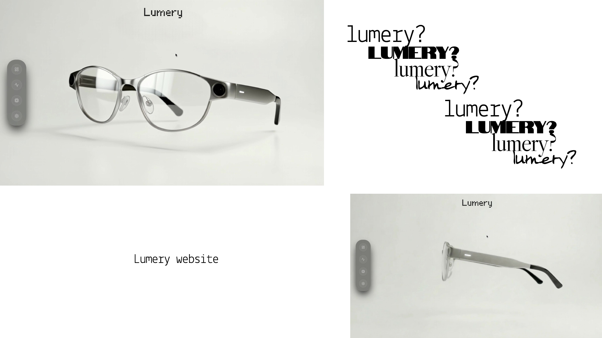
Архитектура продукта
Личная система знаний
Автоматическая структура по природе и намерению записи.
Сквозные подборки для проектов, планов, сравнения и вдохновения.
Короткая очередь на проверку — только когда уверенности классификации недостаточно.
Живая карта путешествий
Значимая запись с местом, временем и, по желанию, голосовым контекстом.
Проходимый путь с таймлайном и режимом воспроизведения истории.
Автоматически собранный мини-фильм и гид по прожитому опыту.
Социальный слой по желанию
MyMind и MyWorld никогда не публикуют ничего автоматически.
Осмысленные сигналы вместо публичных счётчиков лайков и шумных комментариев.
Чужие визии становятся знаниями, коллекциями и будущими решениями.
Система раскладывает всё сама, но показывает уверенность, Intake и редактирование, когда сомневается.
Камера, голос, OCR и ответы ассистента становятся единообразными карточками, а не отдельными хранилищами.
Семантический поиск опирается на текст, OCR, транскрипты, сущности и контекст — а не на точные имена файлов и ключевые слова.
Приватность по умолчанию, явная публикация и огрублённая локация — правила продукта, а не настройки, добавленные потом.
Внутри рабочего файла
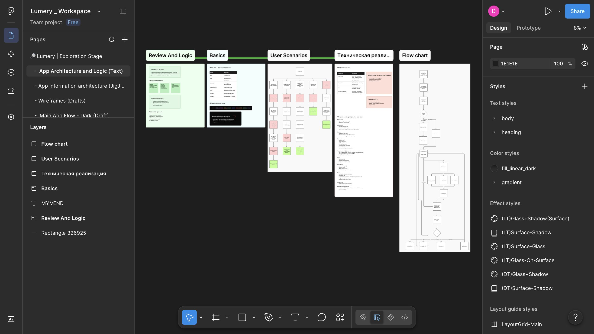
Пользовательские сценарии, техническая реализация, правила объектов и ветвящиеся блок-схемы были размечены до визуального слоя.
01 / 06Шесть реальных видов из Figma · переключайте в навигатореЛогика → черновики → флоу → система → обзор → прототип
Визуальный язык
Монохромная база даёт продукту спокойствие. Свет, точки и цифровые блоки делают его живым.
Айдентика сочетает сдержанную типографику, техническую линейную графику и модульный синий сигнал. Те же ингредиенты продолжаются в UI продукта, веб-коммуникации, 3D-сценах и моушн-этюдах.
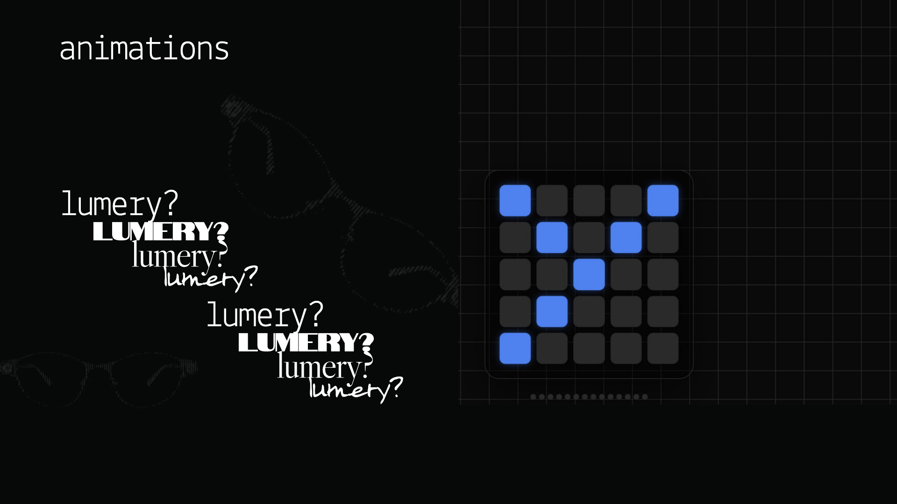
Процесс
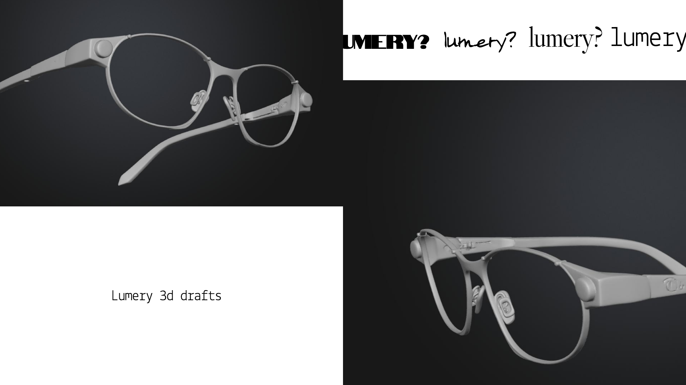
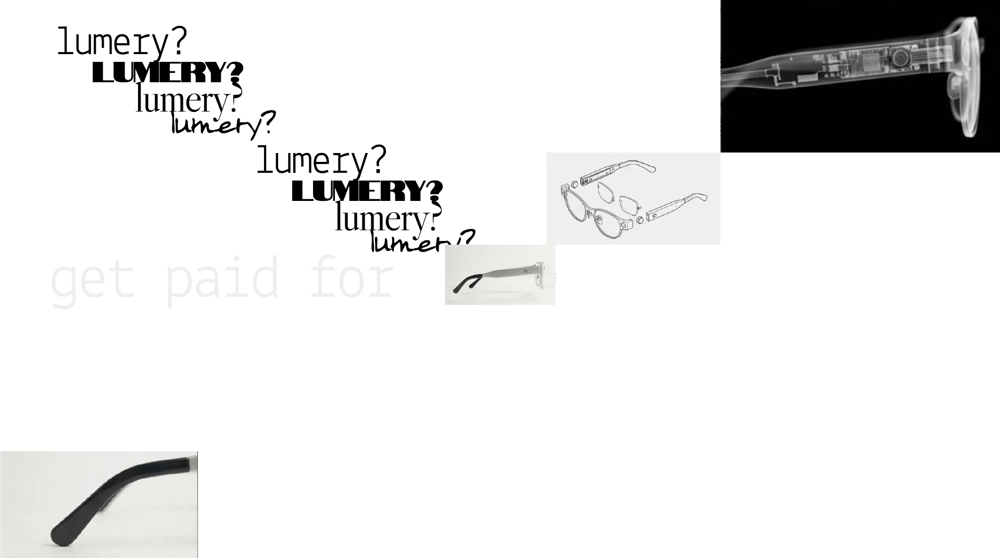
Вклад
Продукт, созданный вместе с CEO и ещё одним дизайнером.
Развивал визуальное направление очков вокруг формирующейся технической архитектуры.
Проектировал направления приложения и помогал определить логику, связывающую устройство, контент и пользователя.
Построил визуальный язык, который тянется через бренд, интерфейс, сайт, 3D и моушн.
Текущий статус
Итог — цельное направление продукта, готовое к дальнейшей инженерии и разработке.
Lumery всё ещё в разработке, поэтому этот кейс о решениях, системном мышлении и широте дизайна, а не о рыночных метриках. Показанная работа отражает совместную дизайн-фазу с декабря 2025 по май 2026.
Следующий кейс
Bitronix↗